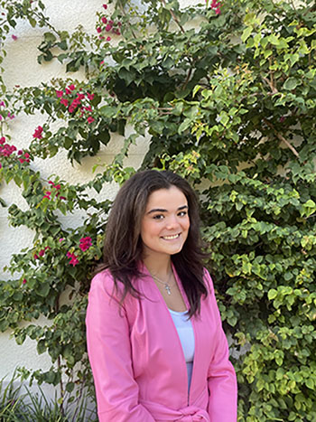

About the author
Lily Bhote is a student at the University of Miami. She majors in journalism and minors in marketing. Bhote has extensive professional experience through her internships with Ocean Drive Magazine and Capital Analytics. She has had a passion for writing since she was young and enjoys writing about the arts and current events. In recent years, she interned as a journalist for Ocean Drive Magazine. In this portfolio you will find a large array of her work grouped by theme.
Resume Highlights
Work experience
- Madewell, Retail Associate. November 2022-present
- Ocean Drive, Journalism Intern. August 2021-December 2021
- Capital Analytics, Intern. January 2020-April 2020
Skills
- Proficient in all Microsoft platforms
- Knowledge of HTML/CSS coding
- Proficient in CMS platforms such as Morweb and Wordpress
- Extensive customer service experience
- Strong non-fiction writer/journalist who has covered a range of topics
Interests
- Art
- Fashion
- Food
- Current events
- Tennis
Volunteer work
- Best Buddies, 2020
- Common Hope, 2012-present
For my full resume, click here
Noteable Ocean Drive Articles
For more content, click here